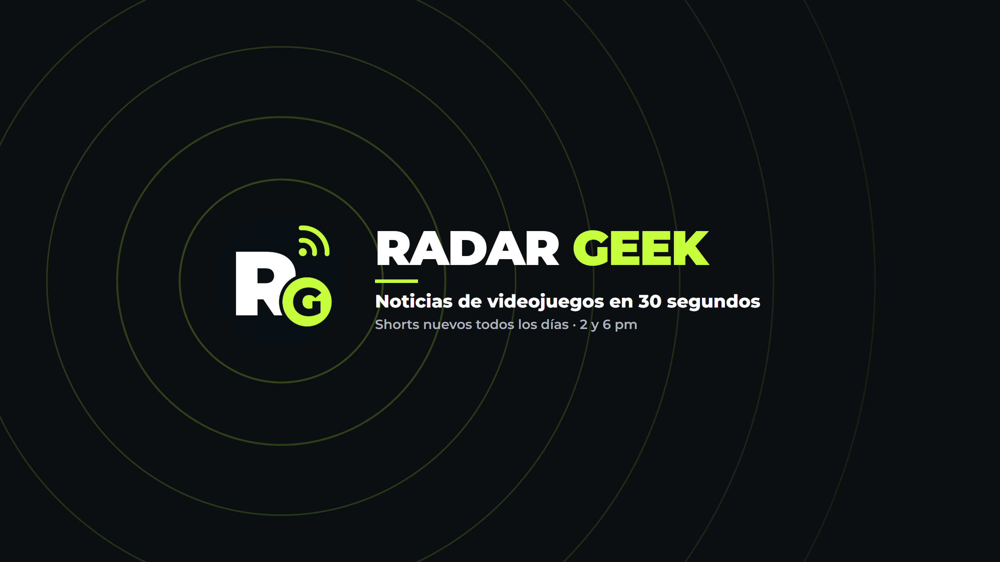

RADAR GEEK
Noticias de videojuegos en 30 segundos, todos los días a las 2 y 6 pm (hora del centro de México). Juegos gratis cada jueves y lanzamientos de la semana cada viernes.
La app radar-geek
Radar Geek se produce con radar-geek, una herramienta propia que arma los videos y los publica en las cuentas de Radar Geek en Instagram y en YouTube Shorts a la hora programada. La usa solo el equipo de Radar Geek para sus propias cuentas; no es un servicio para el público ni pide acceso a cuentas de otras personas.
Para publicar en YouTube usa los servicios de API de YouTube. Más detalles en la política de privacidad.